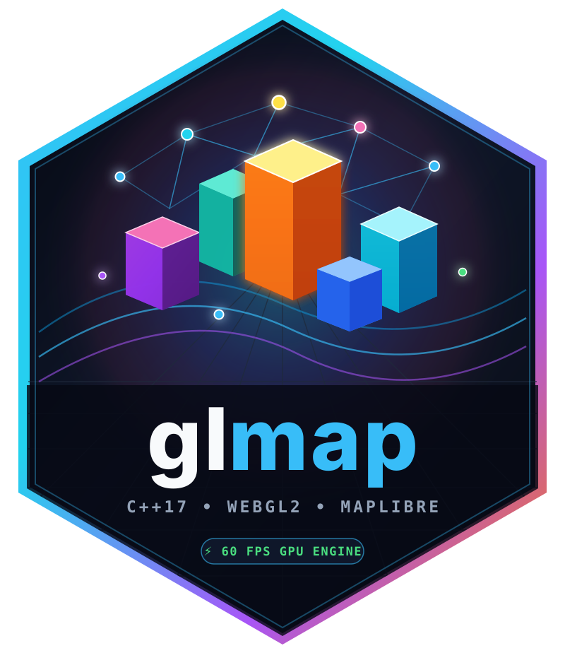

Customize or Localize User-Facing UI Labels in glmap (gl_labels, set_labels)
Source: R/controls.R
gl_labels.RdCreates a flat named list of user-facing UI strings used across glmap's
built-in controls (navigation tooltips, layer switcher, marker engine selector,
legends & GPU raster shader controls, draw toolbar, measurement widget,
address search bar, overview minimap, and HUD).
Usage
gl_labels(
zoom_in = "Zoom in",
zoom_out = "Zoom out",
reset_north = "Reset bearing to north",
layers_title = "Layers",
basemap_header = "Basemap",
overlays_header = "Overlays",
marker_engine_header = "Marker / Icon Engine",
marker_mode_auto = "Auto (Dynamic)",
marker_mode_cluster = "Cluster + GPU Atlas",
marker_mode_lod = "LOD Hybrid (Dots -> Icons)",
marker_mode_atlas = "GPU Sprite Atlas (All Icons)",
marker_mode_points = "GPU Fast Dots (SDF)",
basemap_groups = NULL,
layer_groups = NULL,
legend_default_title = "Legend",
layer_opacity = "Layer Opacity",
shader_palette = "GPU Shader Palette",
gpu_hillshade = "Real-Time GPU Hillshade",
custom_palette = "custom (R)",
draw_poly_label = "Poly",
draw_rect_label = "Rect",
draw_circle_label = "Circle",
draw_line_label = "Line",
draw_pin_label = "Pin",
draw_clear_label = "Clear",
draw_poly_title = "Draw a polygon",
draw_rect_title = "Draw a rectangle",
draw_circle_title = "Draw a circle",
draw_line_title = "Draw a polyline",
draw_pin_title = "Draw a marker",
draw_clear_title = "Clear all drawn shapes",
drawn_area_prefix = "Drawn Area #",
remove_drawn_button = "Remove",
measure_start = "Measure Distance / Area",
measure_finish = "Finish Measure",
measure_clear = "Clear",
measure_length = "Length",
measure_area = "Area",
measure_hint = "Click points on map (3+ for area, double-click to finish)",
search_placeholder = "Search address or place...",
search_button_title = "Search OpenStreetMap",
search_clear_title = "Clear search",
search_searching = "Searching OpenStreetMap...",
search_no_results = "No results found.",
search_unavailable = "Search unavailable.",
minimap_title = "Overview",
export_png = "Export PNG",
hud_features = "Features",
hud_lon_lat = "Lon/Lat",
hud_raster = "Raster",
hud_dist = "Dist",
...
)
set_labels(map, labels = NULL, ...)Arguments
- zoom_in, zoom_out, reset_north
Tooltips for the navigation zoom/compass buttons.
- layers_title, basemap_header, overlays_header, marker_engine_header
Section headers in the Layer Switcher.
- marker_mode_auto, marker_mode_cluster, marker_mode_lod, marker_mode_atlas, marker_mode_points
Option labels in the Marker / Icon Engine dropdown.
- basemap_groups
Optional named character vector/list mapping basemap group IDs to display labels (e.g.
c("Light" = "Clair", "Dark" = "Sombre", "Satellite" = "Satellite")).- layer_groups
Optional named character vector/list mapping overlay group IDs to display labels (e.g.
c("Risks" = "Risques")).- legend_default_title, layer_opacity, shader_palette, gpu_hillshade, custom_palette
Labels inside legend and raster shader cards.
- draw_poly_label, draw_rect_label, draw_circle_label, draw_line_label, draw_pin_label, draw_clear_label
Short button labels on the draw toolbar.
- draw_poly_title, draw_rect_title, draw_circle_title, draw_line_title, draw_pin_title, draw_clear_title
Hover tooltips on the draw toolbar.
Labels inside the popup shown when clicking a drawn shape.
- measure_start, measure_finish, measure_clear, measure_length, measure_area, measure_hint
Labels inside the distance/area measurement control.
Labels inside the OpenStreetMap search control.
- minimap_title, export_png
Header for the overview minimap and label for the PNG export button.
- hud_features, hud_lon_lat, hud_raster, hud_dist
Labels inside the bottom status HUD.
- ...
Additional named label overrides.
- map
A
glmapwidget orglmap_proxy(forset_labels()).- labels
A named list of label overrides (e.g., from
gl_labels(...)), orNULLto use arguments in....
Value
For gl_labels(), a named list of UI label strings. For set_labels(), the updated glmap widget or glmap_proxy.
Details
By default, glmap uses English for all user-facing text and carries no
built-in multi-language dictionaries. Supply gl_labels(...) to glmap(labels = ...)
at initialization or call set_labels(proxy, ...) in Shiny to switch any or
all UI strings on the fly without re-rendering the map or losing active layers.
Use basemap_groups and layer_groups (named character vectors or lists, e.g.
c("Risks" = "Risques", "Claims" = "Réclamations")) to translate the display
names shown in the Layer Switcher while keeping the underlying group IDs
unchanged for show_group(), hide_group(), clear_group(), and input$<mapId>_groups.